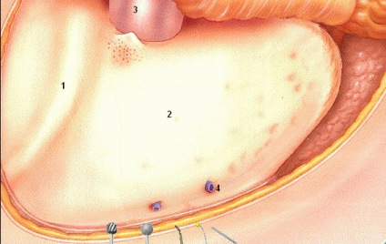
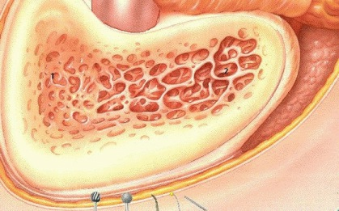
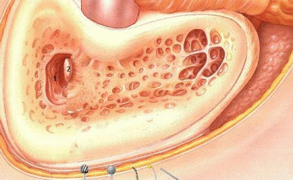
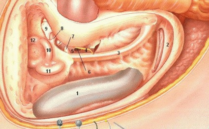
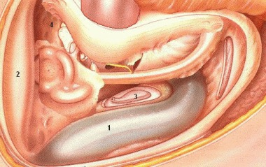
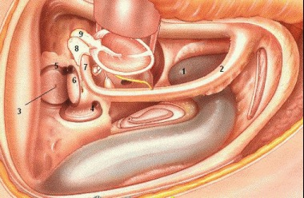
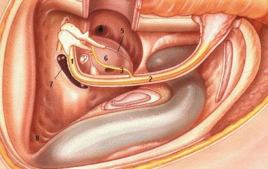
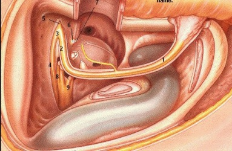
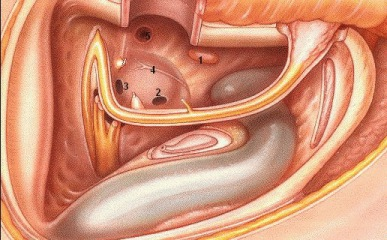
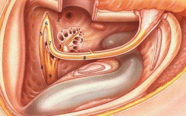

Dr. F. Ling's
Easy Ear Anatomy
Temporal Bone Dissection
LATERAL APPROACH

1. Temporal line
2. Mastoid cortex
3. External auditory canal skin
4. Emissary veins

1. Koerner's septum
2. Mastoid air cells

1. Mastoid antrum
2. Horizontal semicircular canal

1. Sigmoid sinus
2. Digastric ridge and posterior belly of digastric muscle
3. Facial nerve (skeletonized mastoid segment)
4. Chorda tympani
5. Facial recess triangle bound by: chorda tympani, facial nerve and incus buttress
6. Round window opens into cochear scala tympani
7. Pyramidal eminence containing stapedius muscle
8. Incus buttress
9. Incus body
10. Horizontal semicircular canal
11. Posterior semicircular canal
12. Superior semicircular canal

1. Sigmoid sinus
2. Tegmen tympani
3. Endolymphatic sac in dura of posterior fossa between posterior
SCC and sigmoid sinus enters temporal bone at operculum which lies
posterioinferiorly from IAC
lies at or below a line projected from axis of horizontal SCC (Donaldson's line)
4. Epitympanum
Cog area (not shown)
small bony bar anterior and superior to cochleariform process which separates anterior epitympanum from rest of the attic
geniculate ganglion lies deep and medial to this

1. Jugular bulb
2. Facial nerve (mastoid segment)
3. Subarcuate artery
4. Posterior semicircular canal (ampullated end)
5. Superior semicircular canal (ampullated end)
6. Horizontal semicircular canal (ampullated end)
7. Facial nerve (tympanic segment)
8. Incus
9. Malleus

1. Facial nerve (tympanic segment)
2. Facial nerve (mastoid segment)
3. Chorda tympani
4. Eustachian tube
5. Jacobson's nerve (CN IX)
6. Promontory of cochlea
7. Vestibule
elliptical recess of utricle
spherical recess of saccule
8. Sinodural angle

1. Facial nerve (mastoid segment)
2. Facial nerve (tympanic segment)
3. Geniculate ganglion
4. Facial nerve (labyrinthine segment)
5. Greater superficial petrosal nerve
6. Cochleariform process
7. Tendon of tensor tympani
8. Superior vestibular nerve
9. Inferior vestibular nerve

1. Internal carotid artery
2. Round window
3. Oval window
4. Jacobson's nerve and cochlear promontory
Sinus tympani is an area that cholesteatoma can hide to which access is difficult. It is bounded by:
pyramidal eminence (medial surface)
ponticulum (bony ridge between oval window niche and sinus tympani)
subiculum (bony ridge between round window niche and sinus tympani)

1. Cochlea scala vestibuli ("superior" to basilar membrane in cochleostomy)
scala tympani ("inferior" to basilar membrane in cochleostomy)
2. Tensor tympani muscle (cut)
3. Cochlear nerve to modiolus
4. Facial nerve (meatal segment)
5. Facial nerve (labyrinthine segment)
6. GSPN
7. Facial nerve (tympanic segment)
8. Facial nerve (mastoid segment)
9. Vestibular nerve